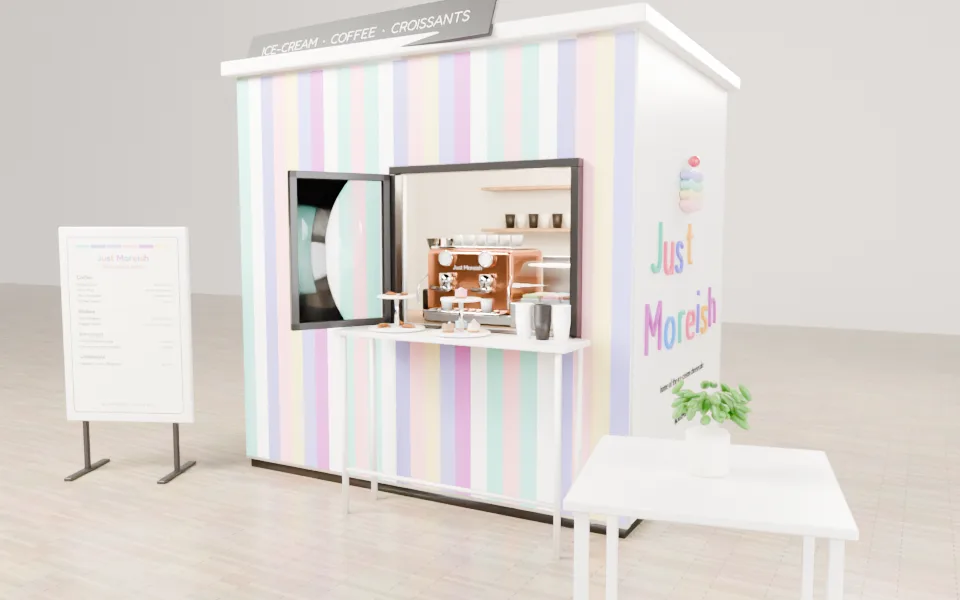
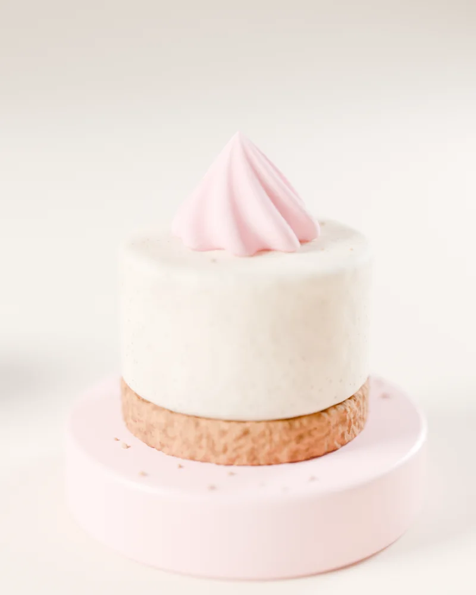
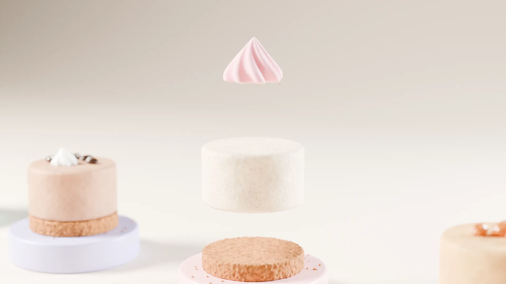
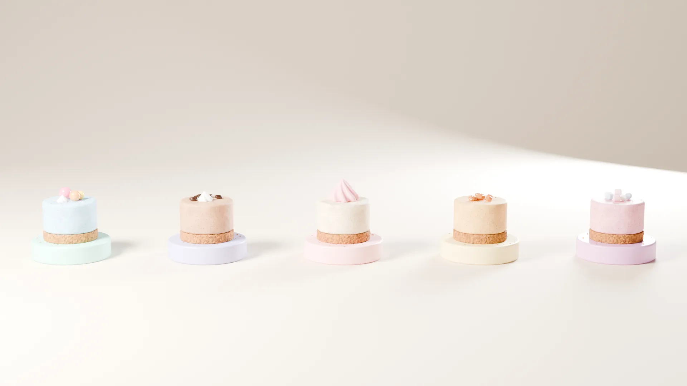

The kiosk
A pastel box at Fourways Crossing
It started with a striped coffee kiosk: cappuccinos, toasted sandwiches, smoothies and cake, served through a little black window.


Our story
The kiosk
It started with a striped coffee kiosk: cappuccinos, toasted sandwiches, smoothies and cake, served through a little black window.

The idea
We froze a cheesecake filling like ice-cream, set it on a buttery biscuit base, and topped it by hand. People came back for it. Then they came back for six.

On the road
Weddings, Eid tables, corporate days and markets: live coffee and ice-cream stations, croissants and dessert tables, anywhere in Joburg.

Today
Seven signature flavours, custom cakes built your way, gelato by the litre and our own Arabica beans. Still handmade. Still moreish.

What we care about
Bases pressed, fillings set and toppings placed by people, not machines.
If a topping is worth adding, it's worth adding properly. No sad sprinkle.
Eid, weddings, a random Tuesday: dessert should feel like an occasion.
Order online, book a station, or just tell us your favourite flavour.